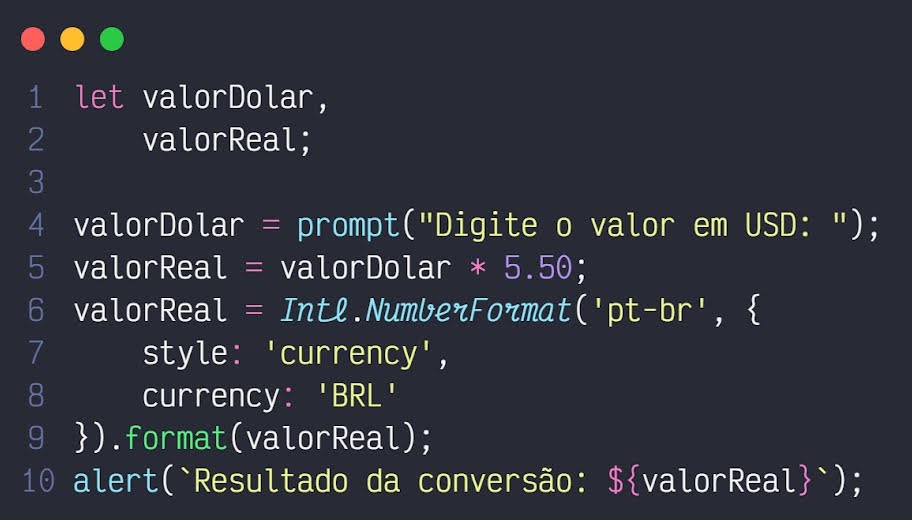

MARCELO MOURA
Bem-vindo 👋
Meu nome é Marcelo, tenho 21 anos, nasci e moro nessa querida e quente cidade de Araraquara.
Meu contato com a tecnologia começou na adolescência depois de começar um curso técnico, o qual confesso que comecei mais por insistência dos meus pais, mas com o passar do tempo fui aprendendo bastante coisa e percebi que, independente de qual área da tecnologia você atue você pode fazer e aprender coisas incríveis, muitas vezes dando um simples Google... Foi aí que cada vez mais comecei a me aprofundar, desde formatar meu próprio computador, ativar o Windows e o Office com cracks e ativadores duvidosos, instalar outros sistemas operacionais no celular (que me fez quase perder alguns aparelhos), até a programação.
É engraçado como o psicológico da gente é, no começo você vê aquele monte de chaves, colchetes e palavras em inglês e fica receoso... Mas quando você se acalma e vê que tudo aquilo serve para organizar um determinado conteúdo portas começam a se abrir, desde então levo essa regra pra tudo... “Calma! Não seja afobado”, alias pra quase tudo.
Depois de algum tempo estudando, e dando azar em relação à faculdade, decidi colocar a mão na massa e mostrar meus conhecimentos na prática, por isso criei essa página, que, aliás, me inspirei no Material Design, que é uma padronização de interfaces criada pelo Google. Abaixo você pode ver um pouco mais sobre meu conhecimento, se você não for da área não há problema, estou aqui também para ajudar e tirar dúvidas, pois se teve dúvida é por que você entrou até aqui, então se possível aproveite também para me dar sugestões do que melhorar.

Em um dia comum antes da pandemia
E o que eu sei sobre tecnologia? Hmm...
Para listar vou tentar seguir na ordem que aprendi.
Conhecimentos técnicos – Tenho conhecimentos em montagem, manutenção e formatação de computadores, instalação e remoção de programas (Os Baidu da vida), e e-mails. Tenho boa compreensão dos sistemas operacionais de computador, destacando o Windows, pois usei ele minha vida toda, como boa parte das pessoas. Linux... Confesso que ainda estou aprendendo, mas me viro bem, preciso dar um Google para algumas coisas que talvez eu faça tranquilo no Windows, mas é a vida... Aliás, usar o terminal dele é muito confortante, além de você se sentir um Hacker, conheço um pouco também do Mac OS, pois ele é um pouco parecido com o Linux, visto que ambos têm como base o Unix, e em minha opinião é a melhor e mais bonita interface gráfica, uma pena os Macs custarem um rim.
Tenho um conhecimento legal também sobre os Sistemas Mobile (Android e iOS). Durante muito tempo aprendi sobre o funcionamento e comportamento do Android, fucei no celular, instalei outras ROMs (ROM - exemplificando, o Android inteiro que vem no seu celular), e do lado maçã da força tive por um tempo iPhone, então também tive experiência e aprendi sobre o funcionamento do sistema. Aliás, como estou falando sobre Smartphones, pode parecer besteira em primeiro momento mas para quem está por fora, os celulares são literalmente computadores, com algumas ligeiras mudanças para caber em um corpo pequeno e não precisar ficar na força o tempo todo, e por possuírem aplicativos o mercado para trabalho desenvolvendo aplicativos para essas plataformas é muito grande e conhecer sobre é um diferencial para o desenvolvedor.
Conhecimentos de Programação – Esta é a parte que mais gosto, que é a de construir ou melhorar as coisas... Todos os sistemas seja um site, um sistema de computador, aplicativos, sistemas de automação residencial, assistentes virtuais, e por aí vai, são programados... feitos por programadores. Como as áreas são vastas existem programadores que são especializados em alguma determinada área, e tem os Full-Stack... Que não tem uma especialização específica e sim desenvolvem para tudo... Espero conseguir ser um, pois para aprender tudo que um Full-Stack precisa leva tempo (Creio que ainda sim seja menos que o tempo levado para se aposentar).
Captura de tela de um algoritmo simples que fiz em JavaScript
para
converter
um valor de dólar para real
Agora vamos listar o que sei dentro da programação.
Linguagens de Programação
Eu não pretendo ficar estagnado em uma linguagem específica, claro, acho importante aprender bem uma, incluindo Frameworks e bibliotecas, porém tenho em mente sempre continuar estudando e aprender outras linguagens e tecnologias, pois um programador flexível tende a trabalhar melhor com mudanças e entregar melhores resultados. Fora as linguagens de Programação, tenho conhecimento em HTML para a marcação de Páginas Web, CSS para estilização, e tenho um conhecimento básico em bancos de dados SQL.
Conhecimentos em Redes e Segurança – Uma área legal também, e tenho conhecimentos básicos, entendo como uma rede e a internet funciona, protocolos HTTP e HTTPS, conhecimentos básicos de segurança, então o funcionamento de criptografia (Que se tornou uma preocupação agora com a computação quântica), etc.
Tenho também conhecimento básico de tecnologias como inteligência artificial, conceitos de experiência do usuário, design de interfaces, linha de comando, Git, Github e SCRUM.
Após ter falado um pouquinho sobre meus conhecimentos, sempre é bom citar certificados, e as formações acadêmica que tenho... Mesmo que em relação à faculdade dei e estou dando azar, por tanto segue:
Formações Acadêmicas
Cursos Extracurrículres
Embora não esteja cursando no momento a faculdade, procuro não usar isso como desculpa para não estudar, e os cursos online realmente fizeram a diferença no meu aprendizado.
“Quem quer da um jeito”
- Meu pai
Desenvolvimento de Startup — QR Tickets
Resultado do trabalho da disciplina Inclusão
Digital do programa CEPROESC, enquanto estive como aprendiz, desenvolvemos um projeto de startup, que
recebeu o nome de Qr Tickets,
uma plataforma de venda de ingressos online das mais diferentes categorias através de um sistema de
e-commerce, onde o usuário poderia adquirir os ingressos via Web Site ou pelo Aplicativo Mobile.
Apresentação do projeto, com certeza
um dos dias que mais fiquei nervoso na vida
Imersão Dev — Alura
Evento online fornecido pela escola de cursos de tecnologia Alura,
onde foram ensinados os conceitos de desenvolvimento Web desde o ínicio, e realizado alguns projetos para
consolidar o conhecimento e criar nosso portifólio.
Este site
Está página Web com certeza é meu maior projeto até o momento... Pois
diferente dos outros eu não tive uma base e/ou ajuda de outras pessoas, somente eu e o Google. Foi uma
maneira diferente que encontrei para mostrar meus conhecimentos e ao mesmo tempo falar sobre mim e sobre TI
de uma forma moderna e descontraída.
Estou no mercado de trabalho desde 2018, quando finalmente consegui meu primeiro emprego após meses correndo atrás, onde estou até hoje.